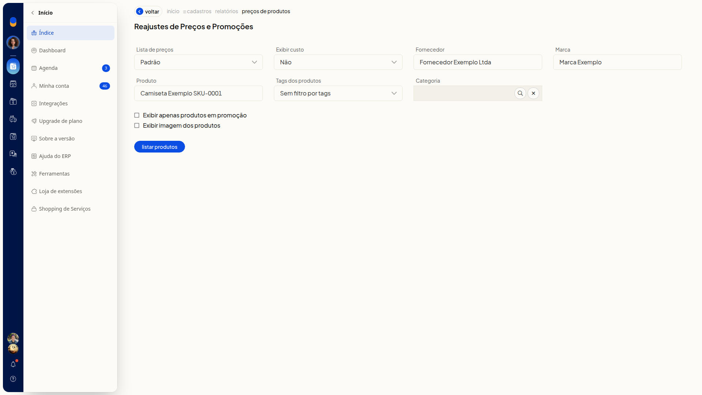

Informar promoções dos produtos
Instruções
-
Acesse Cadastros > Produtos.

-
Clique em Mais ações.

-
Clique em Reajustar preço dos produtos.

-
Ajuste os filtros que você precisa. Nenhum filtro é obrigatório.
Lista de preços e custo
- Lista de preços: selecione uma lista já cadastrada. A opção inicial é Padrão.
- Exibir custo: selecione Não, Custo da compra ou Custo médio. A opção inicial é Não.
Produto
- Fornecedor: busque um fornecedor já cadastrado. Se o nome não existir, a tela indica que o cadastro não foi encontrado.
- Marca: busque uma marca já cadastrada. Se o nome não existir, a tela indica que a marca não foi encontrada.
- Produto: informe o produto para restringir a listagem.
- Tags dos produtos: selecione tags já cadastradas. Para listar sem filtrar por tags, escolha Sem filtro por tags.
- Categoria: busque uma categoria já cadastrada. O texto livre não permanece no campo. Esse filtro só aparece se categorias de produto estiverem disponíveis para você.
Exibição
- Exibir apenas produtos em promoção: marque para listar só produtos em promoção.
- Exibir imagem dos produtos: marque para exibir a imagem dos produtos.

-
Clique em Listar produtos e aguarde a geração da listagem. A tabela mostra Descrição, Código (SKU), Unidade e Preço, com os botões Exibir filtros, Download, Informar reajuste e Informar promoções.

-
Clique em Informar promoções.